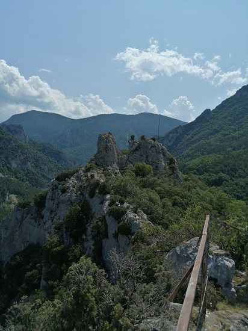

Notre destination : le piton de l'entrée des gorges


Le piton de l'entrée des Gorges est aménagé,
on peut (en regardant bien...) apercevoir, de là, les balustrades qui entourent tout ce belvédère
La Rando (si on veut faire court et ne pas trop faire de tout terrain en voiture) commence juste avant le pont traversant l'Aude à la sortie d'Axat en venant de Saint Martin Lys. On pourra trouver une fabrique de Miel ou les ateliers municipaux (au choix...) pour laisser son véhicule.
Ateliers municipaux d'Axat (en fond de photo, se trouve le Belvédère)
Prendre le chemin des Aliès, route forestière qui est également le chemin de VTT 51 pour la randonnée VTT des gorges de St Georges

La route Forestière commence au pied de ce panneau
Ce chemin monte tranquillement, parallèlement à l'Aude, dans la forêt. De temps en temps une trouées, nous permet d'apercevoir les hauteurs de la forêt des Fontanilles

La forêt des Fontanilles, de l'autre coté de l'Aude
Remarquer les lignes à haute tension partant de l'usine hydoélectrique de St Georges qui ont en leur temps (début XX°s) permis d'éclairer pour la première fois Narbonne
Même si aujourd'hui on dirait qu'elles gâchent le paysage...
Le chemin passe juste au dessus de l'usine hydoélectrique de St Georges dont on remarque la sortie du canal souterrain amenant l'eau depuis le barrage de Gesse, avant la chute vertigineuse vers l'usine en contre-bas
Passage en haut de l'usine, au dessus des 2 gros tuyaux qui amènent l'eau à l'usine

vue sur Axat de ce même point du chemin,
en arrière plan on aperçoit Planèses (peu, au centre gauche), le clot et les Roumens
A peine plus loin, le chemin fait une courbe et présente un embranchement
Il ne faut prendre ni le chemin de droite, la suite du chemin VTT 51 qui part maintenant vers Artigues, ni le chemin de Gauche qui semble longer les gorges en les évitant (A découvrir...), ni le chemin encore plus à gauche qu'on ne voit pas et qui est en voie de refermeture,
Mais monter directement sur le talus à gauche...
En effet à partir de ce point le chemin n'est plus balisé. Il est marqué car a priori il y a beaucoup de passage, mais dans ce virage il faut deviner. Mais difficile de se tromper : il faut continuer tout droit par rapport au chemin que nous avons suivi jusque là. Et l'objectif est maintenant en point de mire à une centaine de mètres à gauche.
Le sentier se rélargit alors et commence à monter beaucoup plus fort.
Comme le chemin n'est pas balisé, il y a plusieurs possibilités qui s'offrent à nous : personnellement j'ai pris le sentier le mieux marqué et le plus large et j'ai fini par aboutir aux ruines de l'ancien prieuré de St Georges.
Plusieurs rochers en surplomb des gorges sont accessibles depuis ces ruines, plus ou moins complexes d'accès, plus ou moins dangereux, mais globalement donnent la même vue qui ne permet pas d'apercevoir le fond des gorges (pas possible de voir l'Aude) : le seul point de vue donnant cette possibilité est le belvédère, qui est aussi le pic le plus facile d'accès.
Prendre à gauche, le long du muret de la ruine, on arrive alors rapidement à une arche percée dans le roc (a priori naturelle ?) ; le chemin à prendre est marqué par de petits tas de pierres tous les 4 ou 5 mètres, il conduit directement au belvédère. (sur ce sentier ne jamais chercher à escalader, il y a toujours un passage facile qui peut l'éviter, même si la fin du parcours reste assez pentue).
Malgré l'absence de balisage, le belvédère est aménagé avec une balustrade qui en fait le tour, permettant une vue 360 degrés, quasi sans risque, assez impressionnante.
Vue du fond des Gorges
Si vous regardez bien dans l'ombre vous pourrez apercevoir un rafting passer
L'aménagement qui avait servi de cache à mines pour éviter les invasions espagnoles au milieu des gorges apparait
De l'usine hydro-électrique à Planèses en passant par Axat
L'aménagement de l'usine hydro-électrique
de la résurgence photographiée plus haut, jusqu'à l'usine, avec les tuyaux amenant l'eau de l'Aude prise à Gesse
A gauche le chemin forestier que nous avons pris pour arriver ici

Vu vers Nantilla, la plus importante des 3 usines hydroélectriques qui se succèdent jusqu'à Gesse, dont on peut deviner les tuyaux l'alimentant entre les 2 rochers
Remarquer l'ancien relai de télévision sur le pic le plus proche